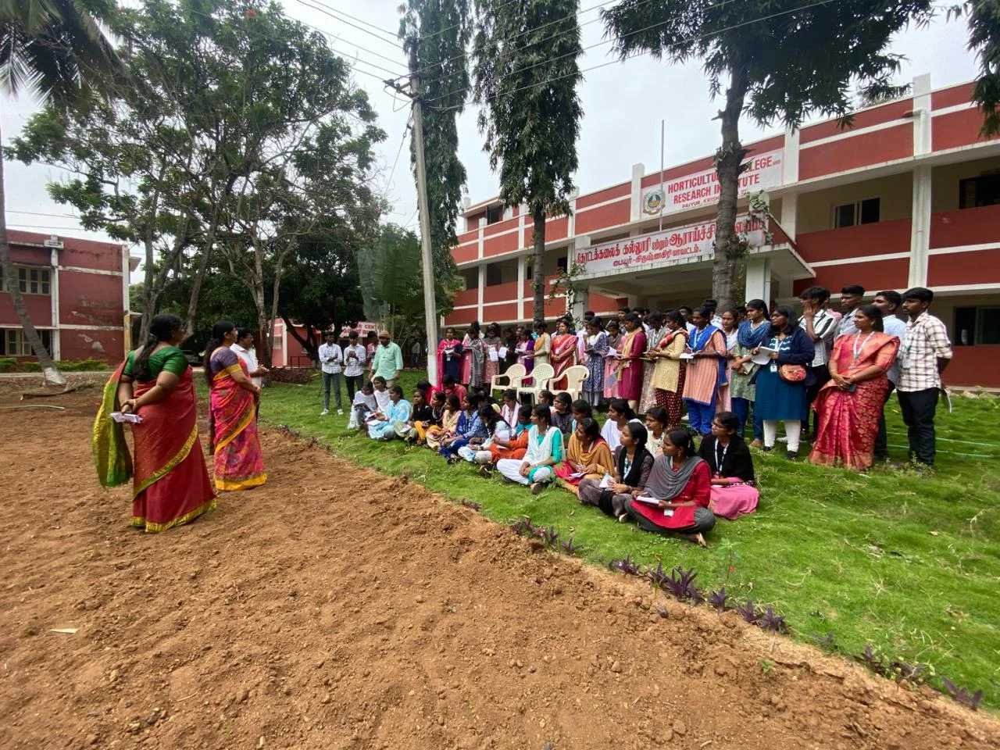
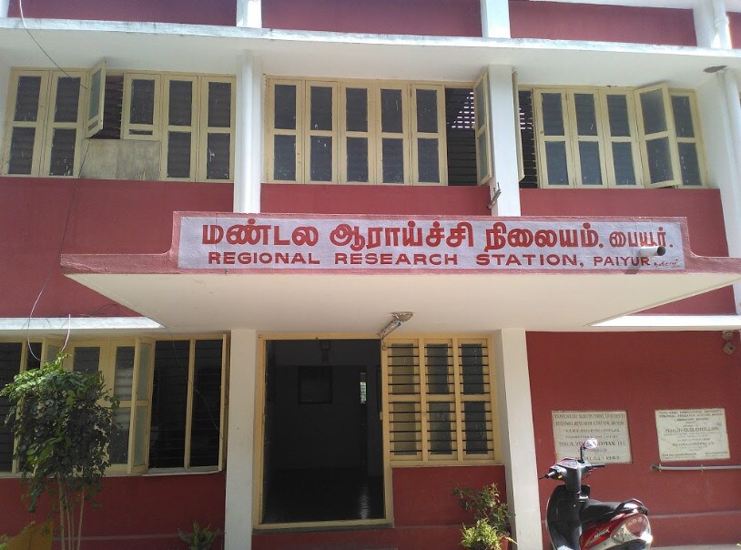

🌱 About the Research Station
Established by TNAU in 1973 to conduct crop research and support farmers.
The Regional Research Station supports agricultural research and provides useful agricultural information for farmers in the region.
TNAU RAWE Programme 2026 · Paiyur Team
Established by TNAU in 1973 to conduct crop research and support farmers.
The Regional Research Station supports agricultural research and provides useful agricultural information for farmers in the region.


The Paiyur RAWE team gains practical agricultural experience through field visits, farmer interactions, agricultural surveys and other programme activities.
Learn × Experience × Serve × Grow